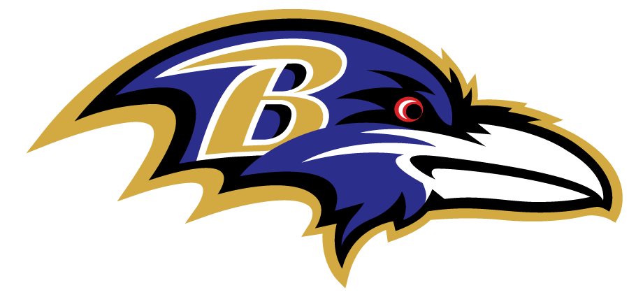
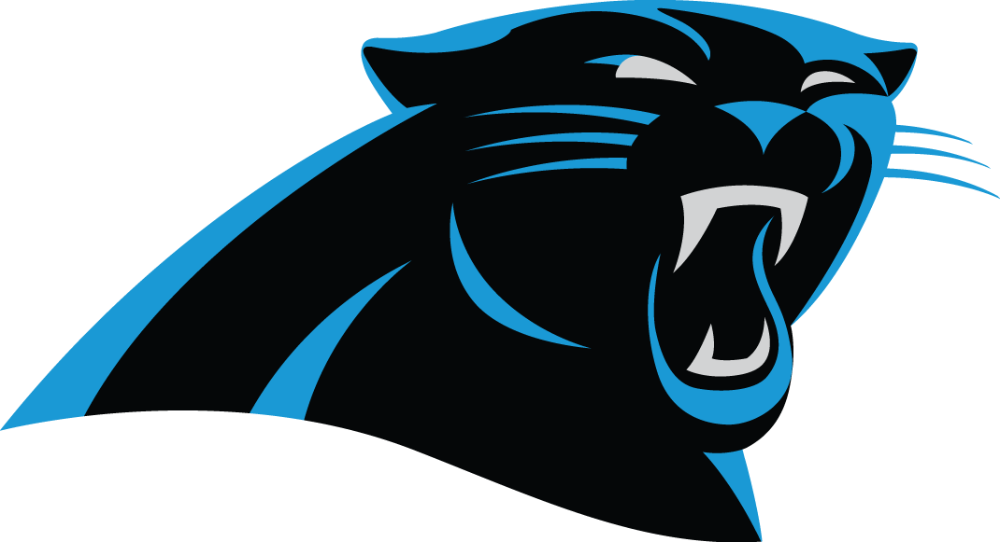
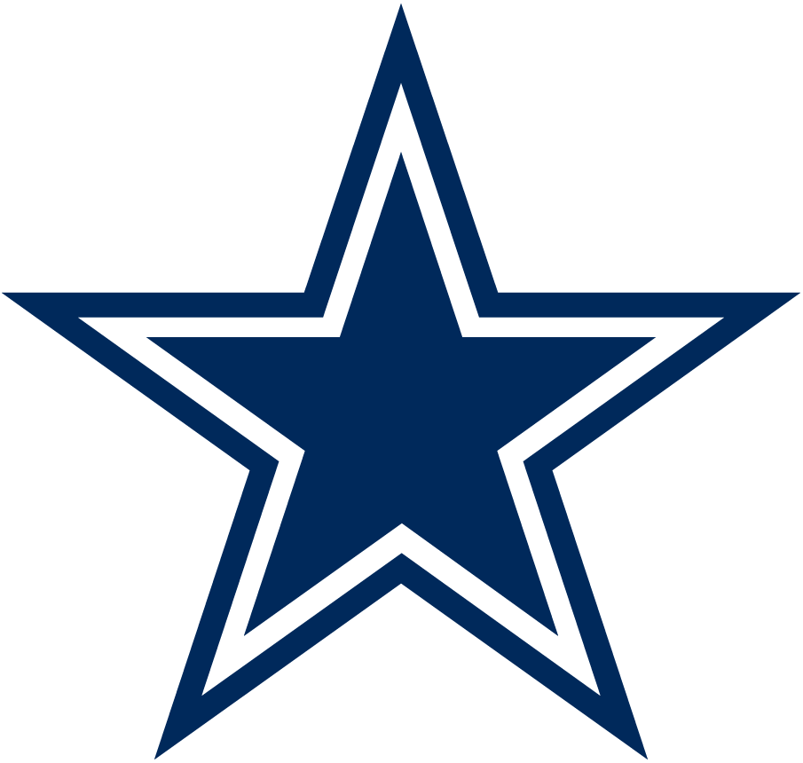

Question 1
First time since 2011 the Cardinals are facing how many road trip games in a row?

Question 2
Last time the Falcons played the NFC North in 2017, they went Bears in Week 1 and Packers in Week 2. This year, it's the same, but in what weeks?

Question 3
For the first time in franchise history, the Ravens will play how many straight primetime games?

Question 4
How many times since the bye week's 1990 institution that the Bills have had it occur Week 11 or later?

Question 5
Matt Rhule will be the first Panthers first-year coach since Dom Capers in 1995 to start off with how many of his first three games on the road?
Question 6
The Monsters of the Midway are 0-4 against the Houston Texans all-time. They get a chance to get win No. 1 in what week?
Question 7
If Joe Burrow is the Week 1 starter versus the Chargers, he will be the first LSU first-round QB since who to start on Opening Day?

Question 8
After getting four primetime games in 2019, the Browns are back to two, making it their ____ season since 1999 with just two primetime games?

Question 9
The Cowboys' haul of five prime time games extends their streak of consecutive seasons with five-plus prime time games to how many games?

Question 10
The Broncos get the NFC South this year. What is Denvers record against that division?
Question 11
Detroit will face Washington for the ____ time since 2002, their second-most common NFC East opponent outside of the Cowboys with 12 encounters.?

Question 12
How many times since 1960 has the first Packers-Bears game takes place Week 12 or later?
Question 13
How many Thanksgiving games have Houston participated in?

Question 14
The last time the Colts opened in Jacksonville and then closed Week 17 versus the Jaguars was in what year?
Question 15
Since 1995, the Jaguars lead the NFL with the most Week 17 games on the road with how many?

Question 16
How many times since 1970 have the Chiefs opened up at home in prime time, and on a third different day of the week?

Question 17
For the second straight season Jon Gruden faces a rookie coach in Week 1 despite never having faced a rookie coach in Week 1 in how many of his previous seasons?
Question 18
The last time the Chargers opened on the road in Cincinnati, the quarterback was Drew Brees in what year?

Question 19
Since what year have teams that open up their new stadium are 9-9? The Rams take on the Cowboys to open up SoFi Stadium in Week 1.

Question 20
For the ____ straight season? the Dolphins are getting just one primetime game, the longest such streak since 1970.

Question 21
The Vikings are 4-0 against the Houston Texans, and can extend that to five games in what week?
Question 22
The last time the Patriots played the Dolphins in Week 1 (2014), they lost. In fact, for his career, Bill Belichick is ____ against Miami in Week 1?

Question 23
For the ____ straight season in the Drew Brees era? the Saints have four primetime games. New Orleans had just one season with four such games before 2006.

Question 24
Joe Judge will become the first Giants rookie coach since who in 1991 to kickoff his career in primetime?

Question 25
Who do he Jets play before their Week 11 bye and immediately thereafter?

Question 26
The Eagles will meet who in primetime for the 17th straight season? the most consecutive seasons of a division rivalry in primetime in NFL history.

Question 27
For the ____ straight season, the Steelers open up in primetime on the road. The last stretch that occurred was 2015-16.

Question 28
The 49ers play ____ in primetime in Week 15. The last time they played the ____ at all in primetime was 1990 on ESPN Sunday Night Football.

Question 29
This is the ____ time since 1990 that the Seahawks have had a bye week in Week 6.

Question 30
For some reason (*cough cough* Tom Brady), Tampa Bay broke their record for most primetime games in a season with how many? The last time they had four in a season was in 2003 after coming off a Super Bowl win.